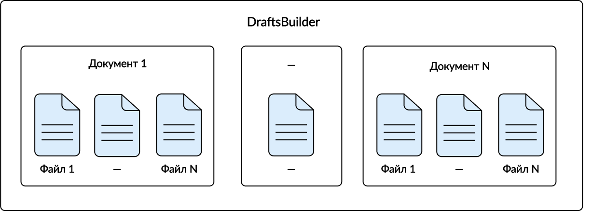

DraftsBuilder
Что такое DraftsBuilder
DraftsBuilder — конструктор черновиков. Он помогает создать из переданных документов пользователя черновик.
DraftsBuilder можно использовать для получения черновиков следующих типов документооборотов:
ответ на требование (urn:docflow:fns534-inventory);
письмо в ФНС (urn:docflow:fns534-letter);
регистрация бизнеса (urn:docflow:business-registration).
Эти виды документооборотов отличаются большим количеством файлов, которые пользователи отправляют в контролирующие органы (далее — КО). Чаще всего такими файлами являются сканы документов. КО имеют требования к размеру, типу и количеству файлов в одном контейнере при работе с электронным документооборотом. DraftsBuilder упрощает процесс формирования черновика, помогает не нагружать излишней логикой системы пользователей и выполнять требования КО.
Функции DraftsBuilder:
приводит приложенные файлы к установленному КО формату;
разбивает файлы на черновики;
подкладывает в каждый черновик сообщение о представительстве, переданное налогоплательщиком;
формирует xml-файл описи к каждому черновику;
формирует xml-файл обращения для черновиков писем ФНС;
задает документам уникальное название:
для документооборотов с ФНС все имена приложений и документов DraftsBuilder приводит к установленному ФНС формату и задает уникальный гуид;
для писем ФНС наименование каждого файла во вложении не должно превышать 100 символов. DraftsBuilder сократит название, если будет приложен файл с названием длиннее 100 символов.
Процесс работы с DraftsBuilder
{kind=link}
Процесс работы с DraftsBuilder сводится к трем шагам:
Создание DraftsBuilder — создается контейнер, который наполняется документами-контейнерами с файлами.
Наполнение контейнера — в DraftsBuilder создаются документы, в которые загружаются файлы.
Запуск сборки черновика — контейнер преобразуется в черновик или набор черновиков.
Данные шаги определяют дальнейший алгоритм работы с методами. Каждый шаг имеет свои правила и логику. Чтобы понять их, сначала нужно разобраться в структуре DraftsBuilder и его сущностях.
Структура DraftsBuilder
{kind=link}
DraftsBuilder состоит из трех сущностей:
DraftsBuilder — базовый контейнер, в который загружаются документы;
документ — контейнер для файлов;
файл — исходные файлы пользователя, которые он отправляет в КО в составе документа. Файлы могут быть формализованные и неформализованные, подробнее об этом читайте в справке.
Налогоплательщики предоставляют в КО документы, которые могут состоять из нескольких файлов. В DraftsBuilder документ является контейнером для этих файлов. В один документ-контейнер можно положить:
один или несколько файлов одного неформализованного документа;
формализованный файл и подпись контрагента;
файлы титульных страниц формализованного документа с подписями контрагента.
Таким образом, DraftsBuilder будет содержать набор документов-контейнеров, которые при сборке преобразуются в один черновик или несколько, согласно ограничениям для файлов.
Ограничения для файлов:
файлы должны быть с расширением: jpg, png, pdf, tif, tiff. Для писем возможен любой формат;
можно приложить не больше 99 файлов;
суммарный объем черновика может быть не более 60 Мб (для писем ФНС суммарный объем должен быть не более 5 Мб).
Для ответа на требования нужно приложить документы, представленные в виде скан-образа и указать номер приказа.
Сборка контейнера в черновик
При сборке DraftsBuilder преобразуется в черновик или несколько черновиков. Например, если суммарный объем приложенных файлов будет больше 60 МБ или пользователь приложит больше 99 файлов, то DraftsBuilder создаст несколько черновиков.
Каждый черновик будет отправлен как отдельный документооборот.
{kind=link}
Для некоторых документооборотов нужно соблюдать требования к составу отправляемых документов в КО. Для писем ФНС в составе должен быть файл обращения, для других документооборотов в составе должен быть файл описи.
Файл обращения в DraftsBuilder — это xml-файл с текстом обращения и сведениями о налогоплательщике. Формируется для писем ФНС (urn:docflow:fns534-letter).
Ограничения по размеру: если текст обращения больше 1 Мб, то будет создано несколько черновиков. Один из черновиков будет содержать только файл обращения, который содержит в себе приложенный текст обращения. Другие черновики будут содержать файл обращения без текста и файлы приложений.
Файл описи в DraftsBuilder — это xml-файл с перечислением документов, которые налогоплательщик отправляет в КО. Это формализованный файл установленного формата. Формируется для следующих документооборотов:
ответ на требования (urn:docflow:fns534-inventory);
регистрация бизнеса (urn:docflow:business-registration).
Особенности:
для требований ФНС файл состоит из списка документов с привязкой пункта требования. В документах будут перечислены файлы для налогового органа и подписи.
Важно
Во время сборки DraftsBuilder автоматически сформирует файлы описи и обращений на основании всех переданных документов.
Работа с подписями
При работе с документооборотами часто нужно прикладывать формализованные или неформализованные файлы. Вместе с формализованными файлами, помимо нескольких форм КНД, нужно прикладывать файл подписи контрагента. Если подписи контрагента нет, то необходимо приложить файл подписи отправителя. Формализованный файл и файл подписи подписываются КЭП отправителя описи.
К неформализованным файлам файл подписи прикладывать не надо. Достаточно, подписать неформализованный файл перед отправкой.
Когда нужно прикладывать файл подпси
Файл подписи нужно прикладывать для многих формализованных файлов. Например, для некоторых документооборотов нужно прикладывать счета-фактуры и накладные. Счет-фактура состоит из xml-файла и sgn-файла подписи контрагента. При работе с DraftsBuilder необходимо прикладывать оба файла.
{kind=link}
Некоторые документообороты, как Ответ на требование о предоставлении пояснений к налоговой декларации по налогу на добавленную стоимость (КНД 1160200), включают в себя только xml-файлы. Для таких файлов необходимо прикладывать также файл подписи отправителя в формате sgn.
{kind=link}
Файлы в каждом черновике нужно подписывать КЭП отправителя описи. Файлы можно подписать перед отправкой черновика или загрузить уже подписанные файлы в документ DraftsBuilder.
Когда не нужно прикладывать подпись
При отправке неформализованных файлов с помощью DraftsBuilder не нужно прикладывать файл подписи. Достаточно подписать неформализованный файл КЭП отправителя описи. Это можно сделать перед отправкой черновика, либо загрузить в документ уже подписанные файлы. Если подписанные файлы сканов, например, не соответствуют требованиям КО, то DraftsBuilder приведет файлы к установленному формату. В таком случае, подпись может стать невалидной и перед отправкой черновика потребуется загружать файл подписи заново.
Прикладывать подпись также не нужно для следующих форм КНД:
Для разделов декларации НДС:
1115102 - книга покупок;
1115103 - книга продаж;
1115104 - журнал учета выставленных и полученных счетов-фактур;
1115105 - дополнительный лист книги покупок;
1115106 - дополнительный лист книги продаж;
1167005 - информационное сообщение о представительстве в отношениях, регулируемых законодательством о налогах и сборах.
Алгоритм работы с DraftsBuilder в API
Создайте DraftsBuilder: POST CreateDraftsBuilder.
Метод создает шаблон черновика. В результате метод возвращает идентификатор созданного DraftsBuilder и все его содержимое.
При создании DraftsBuilder укажите:
флаг
generate-warrant=trueв параметреdraft-options, чтобы сформировать сообщение о представительстве на основании заполненных реквизитов в учетной записи Контур.Экстерн.
Добавьте документ: POST CreateDraftsBuilderDocument.
Чтобы добавить файлы, необходимо сначала добавить для них контейнер — документ. Вызывайте столько раз, сколько документов нужно передать.
Загрузите файлы в Сервис контентов.
Добавьте файлы: POST CreateDraftsBuilderDocumentFile.
Метод создает файл в документе. Для этого укажите идентификатор контента из Сервиса контентов. Вызывайте столько раз, сколько файлов нужно положить в документ-контейнер.
Соберите DraftsBuilder в черновик: POST BuildDrafts.
Метод собирает все добавленные файлы и документы DraftsBuilder шаблона в черновики. В результате метод вернет идентификаторы черновиков, в каждом из которых находится: XML-файл описи или XML-файл обращения, файлы, сообщение о представительстве (если есть).
Для редактирования содержимого DraftsBuilder смотрите описание методов.
Чтобы предотвратить появление коллизий, в работе методов предусмотрены ограничения — блокировки.